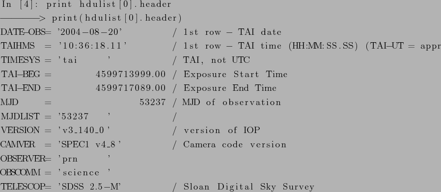

Next: References Up: FITS Previous: Structure Contents
There are many libraries for working with FITS files. The official list is aviable at http://fits.gsfc.nasa.gov/fits_libraries.html. PyFITS, library for Python programming language was used for following examples. PyFITS is a development project of the Science Software Branch at the Space Telescope Science Institute http://www.stsci.edu/resources/software_hardware/pyfits.
Reading FITS headers.
Printing primary HDU.

Updating FITS file.
Example from program pf (plot fits) created for purposes of this work to plot emission in the spectra.
I would also like to add an extra bookmark in acroread like so ... [2]bookmark text is hereAnd this is what I want bookmarked